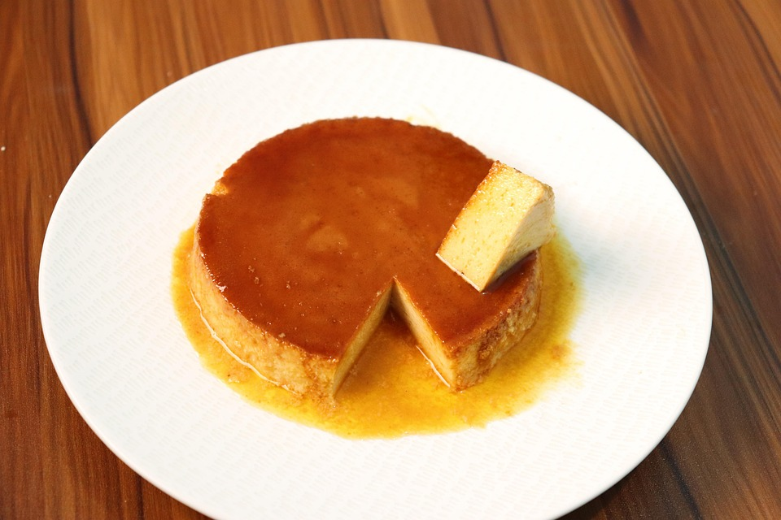

Flan

Description
Flan is a simple yet delectable dessert of french origin. It has very little ingredients, yet it can be a little tricky in its preparation. Despite this though , it's silky texture and scrumptious flavor make up for all possible effort
ingredients
- sugar (3/4 cup)
- eggs (6 pieces)
- condensed milk (1 can)
- evaporated milk (1 can)
- vanilla extract (1 tablespoon)
Steps
- Preheat the oven at 200°C.
- Put the flan mold over the burner at low heat and add the sugar.
- Stir the sugar constantly until it becomes a golden brown caramel.
- Move the mold around so the bottom gets evenly coated.
- Add the eggs, the condensed milk and the evaporated milk to the blender. Blend them together.
- Pour the mix inside the flan mold over the caramel. Cover it well with the flan mold lid or tin foil.
- Heat some water.
- Put your flan mold inside a bigger oven-safe container. Put them both inside the oven and pour hot water in the bigger container up to the middle of the mold flan height.
- Lower the heat at 180°C and let the flan cook for 50-60 min.
- Put your flan out of the oven and let it cool, preferably over night.
- Flan should be ready to take out of the mold.
- Enjoy!